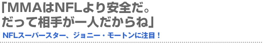
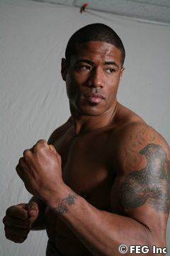
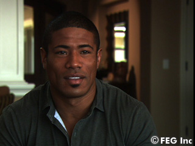
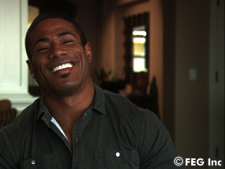
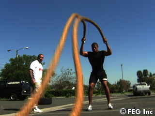
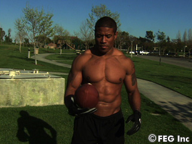
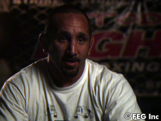

NFLの超有名チーム『49ers』のワイドレシーバーとして活躍していたジョニー・モートンが、まさかの総合格闘家への転向を表明。『SoftBank presents Dynamite!! USA in association with ProElite』（6月2日＝現地時間、アメリカ／ロサンゼルス・メモリアル・コロシアム）でのデビューが決まっている。母親が日本人のモートンは、どこまで強いのか。その魅力に迫る。
愛車はランボルギーニ・ガヤルド
 ――ついにMMA（総合格闘技）でデビューすることになったモートン選手ですが、今はアメリカのどこに住んでいるのですか。
モートン オレンジカウンティーに住んでいる。家は、8人がかりで運び込んだ大きな窓があるのが自慢だね。海のそばで、リラックスできるんだ。僕の人生は大半がカオスに満ちていたからね、リラックスしたいのさ。MMAのトレーニングのあともね。
――オフのときは何をしているのですか？
モートン 仲のいい友達と遊んでいるよ。昔は安い車に乗っていたけど、今は高級車に乗っている。スピードもかなり出るスペシャルな車にね。
――どんなスーパーカーですか。
モートン ランボルギーニ・ガヤルドのスペシャルエディションさ。性能が良くて、まるでボクみたいだろう（笑）。
――車好きなんですね。
モートン そうみたいだね。人はそれぞれいろんな町で育つと思うけど、ボクは海の近くで育った。だから、今でもリラックスしたいときは波の音を聞くんだ。いろんなトレーニングをしているけど、海で走ったりするとリラックスできる。
――小さい頃から、やはり目標はNFLの選手？
モートン 幼い頃はカイロプラクティックの先生かシェフになりたかったんだ。ところが高校からアメフトを始め、大学にはフットボールの奨学金で行った。だけど、プロになるなんて思っていなかったよ。1年目は評判がよかったけど、3年目でNFLに入れる可能性は低いと思っていたから。でも、4年目にスカウトから電話があったからよく考えた結果、1994年にデトロイトライオンズに入団。そして、『49ers』に入ることができたんだ。
ボクはアドレナリン・ジャンキー
 ――NFLからMMAへの転向は、競技性がまったく違うので大変では？
モートン NFLはチームスポーツ。MMAは一人での闘いだ。チームVSチームに慣れているからね。個人競技は慣れていないので、プレッシャーはかかるし、アドレナリンがたくさん出てくるよ。ただ、2つの競技が似ているのは“激しい”ってところ。NFLはパッドに守られているけど、どれだけ危険なものなのかはみんなが知っていると思う。だから、フィジカル的にはテイクダウンにも慣れているよ。
――なぜ、闘いを選んだのですか。
モートン スポーツ以外でも、いろんなビジネスをやっている。でも、アメフトが終わったら退屈だったんだよ。ボクは“アドレナリン・ジャンキー”だからね（笑）。ライトを浴びるのが恋しくなっちゃったんだ。MMAへのチャレンジも好きだし、それにアスレチックスポーツは長くはできないからね。
――心配はないですか？
モートン 歯が折れたり骨が折れたり、脳だって揺れる可能性もあるけど、それはアメフトと一緒さ。NFLではダメージのことなんか考えていなかったから心配はしていなかったし、恐れていては闘えないよ。だからNFLからMMAへの転向はある意味やりやすいと思う。厳しい環境で自分より何倍もでかい奴とやっていたし。こっちはむしろ、ウェイト制だから助かるね。
――二つの競技がともに激しいのは分かりました。でも違う点は？
モートン NFLはディフェンスとオフェンスで休みが取れるけど、MMAは休めない。集中力、精神力がないとね。
Dynamite!!＝“日本人の血”だから嬉しい
 ――会場は、あなたがかつてプレーをしたことがある『ロサンゼルス・メモリアル・スタジアム』。闘いやすいのでは。
モートン 大好きな場所だし、いい思い出もあるよ。自分の場所って感覚だね。10万人も来てくれたら嬉しいね。ぜひ、来てほしいよ。タッチダウンのときはチームだったけど、MMAではボクだけを応援してくれる。チームスポーツから個人のコンバットへ。頼れるのは自分だけだね。これからはいろんなファンが増えてくれたら嬉しいな。アメリカで一番人気のアメフトから、日本で一番人気のMMAに転向するんだし（笑）。今まではアメフト＝黒人の血、これからはDynamite!!＝日本人の血に関われて嬉しいよ！
――友人と家族からは、今回の転向について何と言われましたか。
モートン 実は……家族は知らないんだ。テレビを見てビックリするかも（笑）。でもNFLよりは安全だからね。相手は一人だし。母は知っても何も言わないと思う。でも、親父は言うかもなぁ。この前、親父が家のサンドバッグを見た時に「格闘技やってんのか？」って訊かれたんだ。
――なんて答えたの？
モートン 「違うよ」って言ったんだけど…。試合より親に反応されることが怖いよ。でも、ぜひ来てほしいな。5歳のときからボクの陸上、バスケ、アメフトのすべてのゲームに来てくれたからね。実はNFL時代、両親と離れる時に、タトゥーで母と父の名前を腕に入れたんだ。もし勝てたら許してくれるかな～？
母から“サムライスピリット”をもらった
 ――家族について教えてください。
モートン いつも支えてくれているよ。弟が二人いて、一人はスポーツより勉強が得意で、生物医療学や法律の勉強もしてたな。今は日本で英語を教えているよ。もう一人は、NFLで活躍している。父もスポーツ全般が好きで、アメフトも大好きだ。あるとき、コーチがディフェンスに下がれって言ったんだけど、父は反対に“上がれ”って言ったこともあったな（笑）。母は心配性だね。だけど、じつは好きだと思うんだ。プロで活躍しているのを喜んでくれた。弟のチームと闘ったときは、親がそれぞれのジャージを着て応援してくれたよ。
――子供の頃は？
モートン ボクはデブだったから女の子にはモテなかったな～。でも、いい家族、学校、友人に恵まれてハッピーだったよ。趣味はもちろんスポーツさ。
――ご両親も体格は良いんですか？
モートン ううん、父が170cm、母が158cmくらい。
――自分の性格のなかにどんなものを受け継いだと思う？
モートン おじいちゃんと父親からは、決断力と実行力を受け継いだかな。日本人の母からは“サムライスピリット”をもらった。だから成功したんだと思う。
 ――差別はされましたか？
モートン みんなと違うのは分かっていたけど、差別はされなかったよ。NFLには、いろんなところから選手が来る。それが一つのチームになるんだ。それを教わった。ほかの環境だとそういった共同作業は難しかったかもね。日本に行ったことはないけど、いつか行ってみたいよ。
――総合格闘技ではどんなファイターを目指していく？
モートン アグレッシブでトータルなファイターになりたい。とにかく攻めるのが好きだから、早く決着を付けたいんだ。判定じゃなくてね。最初から様子を見ることなんてしないよ。
――心の準備はできていますか。
モートン 最近、いろんなファイターにリングに上がった時の気持ちを訊いて回っているんだけど、みんな「なんでここにいるの？」って思うみたいだ。興奮せずに落ち着いて集中しないと試合なんてできないよね。すべての責任は自分にあるんだから、感情的にならないように闘おうと思ってる。
――ファンにメッセージを！
モートン みんな！ 僕が12年間、NFLでやってきたことを見てくれたと思うけど、6月2日の『Dynamite!! USA』を会場でぜひ見てくれよ。昔はボールをキャッチしていたけど、今度はぶっ潰すぜ!!■
■モートンを指導している、トッド・メディーナ氏のコメント
 「モートンはボクシング、ヒザ蹴り、テイクダウン、寝技、サブミッション、サンボ……と、いろんなことを器用にこなせる、凄くパワーを持った選手だ。他の選手ができない面白い動き、パンチをするファイターだと思うよ。恵まれた肉体を持っているし、それを使って、次のレベルまで簡単に到達できる。彼はテクニックを一度見せただけで、ずっとやってきたかのようにしてみせる。速く流れるような動きを筋肉が覚えているんだ。今度の試合で、彼が神にもらった能力を全て使おうと頑張っているよ。でも、彼の最大の武器は“心”だね。いい選手でもハートが強くなきゃダメだ。スタンドでもパンチの動き、形もいい。初心者みたいにガードが下がる、脇が開くということがない。一つ一つの動きがキレイに見えるんだ。グラウンドのセンスも良いよ。ポジショニングが分かっているから、パウンドも流れるようだ。アメフトと動きが似ているかもな。小さい相手とはスピードを上げ、重い相手のときはパワーを上げられる。そういう優れた才能を持っているよ。大勢の前でプレーするのは慣れているから、リラックスして闘えるだろう。焦らずに自分の持っているものを全部、出せるよ。だから、あまり早く終わらせないでほしいな（笑）。6月2日、みんなをあっと驚かせてやるさ」■
|